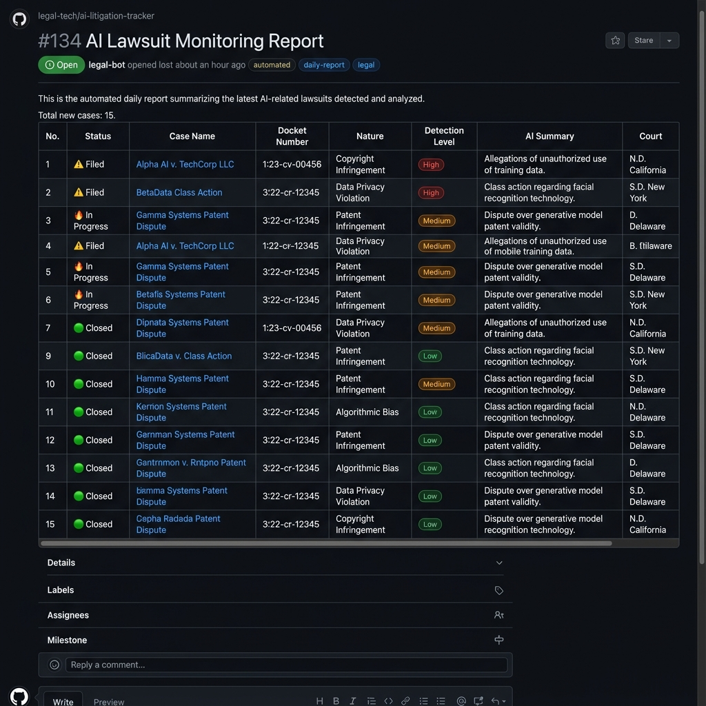
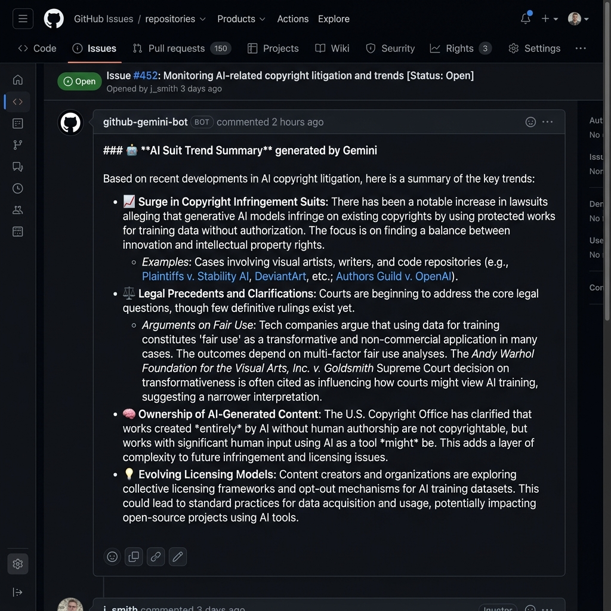
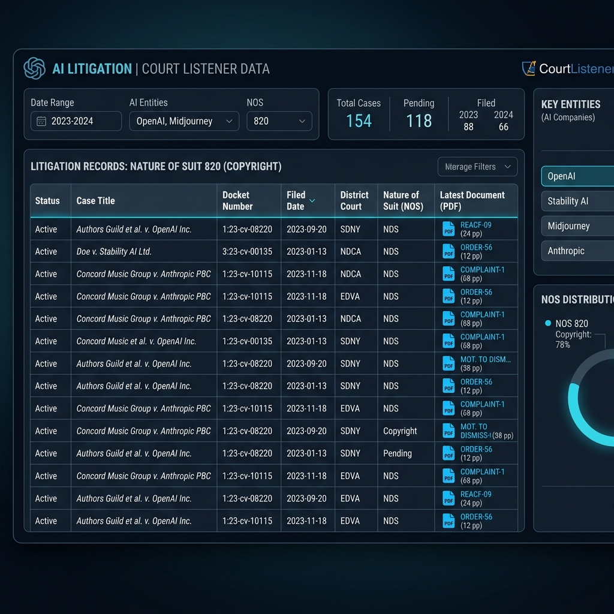

Intelligence for the
AI Litigation Era
AI 모델 학습을 위한 데이터 무단 사용 및 저작권 소송을 실시간으로 추적하고 분석하는 고성능 인텔리전트 자동화 도구입니다. 리스크를 사전에 감지하고 법적 대응력을 강화하세요.
Real-time Monitoring & Analysis
단순한 데이터 수집을 넘어 법률적 맥락을 파악하고 정밀한 리스크 점수를 산출합니다.
Legal Intelligence
미국 연방법원(PACER/RECAP) 데이터를 실시간 조회하여 Complaint, Petition 등 소장 위주로 우선 수집하고 AI 학습 관련 핵심 주장을 추출합니다.
Gemini AI Powered
Gemini Flash Latest를 통해 복잡한 법률 본문을 핵심 요약하고, Gemini Embedding(gemini-embedding-2) 기술로 의미론적 중복을 완벽하게 필터링합니다.
Risk Scoring (0-100)
저작권 직접 언급, 무단 수집 명시, 모델 학습 키워드 등을 가중치 기반으로 분석하여 🟢(Low)부터 🔥(Critical)까지의 리스크 등급을 제공합니다.
Strategic Analysis
단순 요약을 넘어 삼성전자 가우스(Gauss) 등 생성형 AI 모델 및 갤럭시 AI 서비스에 미칠 수 있는 법적/기술적 영향력을 심층 분석합니다.
HTML Email Reports
이메일 발송 시 Markdown을 HTML로 자동 변환하여 테이블·코드블록·Alert 박스가 완벽하게 렌더링됩니다. Gmail·Outlook 등 주요 클라이언트와 호환되는 인라인 CSS 템플릿을 적용합니다.
Data-Driven Insights
2021년부터 축적된 데이터를 바탕으로 AI 소송의 거시적 흐름과 미시적 법리를 동시에 분석합니다.
Historical Trend Analysis
2021년부터 2026년까지의 연도별 AI 소송 발생 건수를 추적합니다. Matplotlib과 Mermaid 차트를 통해 시각화된 법적 트렌드 리포트를 제공하며, 급증하는 소송 추세를 데이터로 증명합니다.
Semantic Cross-Day Dedup
날짜가 바뀌어도 동일한 뉴스를 감지하는 지능형 중복 제거 시스템을 갖추고 있습니다. 0.85 이상의 유사도 임계값을 적용하여 정보의 피로도를 최소화하고 핵심 업데이트만 노출합니다.
Dashboard & Reports
다양한 채널로 제공되는 실시간 분석 리포트의 실제 모습입니다.

GitHub Issue Report
Slack Mobile Alert

Gemini Trend Summary

Structured Legal Data
How it Works
데이터 수집부터 지능형 분석, 리포팅까지의 기술적 아키텍처입니다.
Ingestion & Multi-Source Discovery
CourtListener API를 통한 법원 도켓(Docket) 실시간 추적과 RSS Feed를 통한 글로벌 뉴스 수집을 병행하여 사각지대 없는 모니터링을 수행합니다.
Gemini Cognitive Engine
수집된 비정형 텍스트에서 '사건 번호', '당사자(A v. B)', '법적 근거'를 추출하고, 감지 레벨 점수화 및 삼성전자 영향 분석을 수행하는 중추 역할을 담당합니다.
Automated Pipeline & Dispatch
GitHub Actions를 통해 매시간 주기로 실행되며, 정제된 정보는 GitHub Issues(이슈 누적/병합)와 Slack(실시간 요약)을 통해 즉각적으로 배포됩니다.
Enterprise Ready Setup
간단한 환경 설정만으로 조직의 AI 리스크 관리 시스템을 구축하세요.
# AI 지능형 기능 설정 (Secrets/Variables)
GEMINI_API_KEY = "your_key" # Google AI Studio
GEMINI_MODEL = "gemini-flash-latest" # 최신 Flash 모델 사용
COURTLISTENER_TOKEN = "your_token" # CourtListener API
SMTP_PASS = "your_app_password" # Gmail 앱 비밀번호
ENABLE_EMAIL_SENDER = 1 # HTML 이메일 발송 활성화
GEMINI_SEMANTIC_DEDUP = 1 # 임베딩 기반 중복 제거
BM25_SEMANTIC_DEDUP = 1 # BM25 키워드 중복 제거
GEMINI_DAILY_REPORT_IMAGEGEN = 1 # Imagen 3 이미지 생성
PREVIOUS_ITEM_DEDUP_DAYS = 3 # 교차일 중복 제거 범위Simple Deployment
- GitHub Actions 기반 서버리스 운영
- 환경 변수만으로 즉시 연동 가능
- 스케줄링 및 히스토리 자동 관리 지원